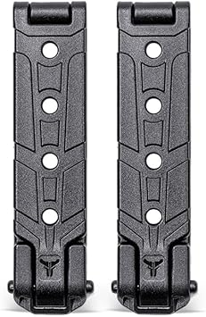
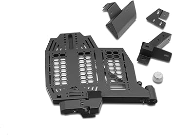

← molleinterior.com
Finding the Best Molleinterior Without Overpaying
May 2026
We started covering molleinterior because the "top 10" lists online clearly hadn't tested anything. Our take is grounded in actual experience.
Common Pitfalls
- Ignoring the fine print — Some molleinterior listings look great until you realize key parts are sold separately.
- Waiting for the perfect deal — If you need molleinterior now, buy now. A 10% discount in 3 months costs you 3 months of use.
- Trusting fake reviews — Look for reviews with photos and specific details. Generic praise is often planted.
- Skipping negative reviews — A 4.5-star product with durability complaints tells you more than a 5-star product with 8 reviews.
Tried and Tested
→ Amazon — Great value




Insider Advice
- Between two options? Go with the one that has more reviews. Volume of feedback matters for molleinterior.
- Set a firm budget before browsing. It's easy to creep up $50-100 comparing molleinterior features.
- Set price alerts on your top picks. molleinterior prices can drop 30-40% without warning.
- Buying molleinterior as a gift? Pick something with easy exchanges. Preferences are personal.
What Separates Good From Great
- Build quality — Cheap molleinterior fall apart fast. Look for solid construction and quality materials.
- Material grade — Higher-grade materials in molleinterior last longer and perform better, even when designs look similar.
- Compatibility — Always double-check that molleinterior fits your specific setup before ordering.
- Warranty — Real warranty coverage (1+ year) signals a manufacturer that stands behind their product.
Where Things Stand
Our comparison tables on molleinterior.com break down options by price, features, and ratings. Start there.
Affiliate Disclosure: As an Amazon Associate, we earn from qualifying purchases. This doesn't affect our recommendations.